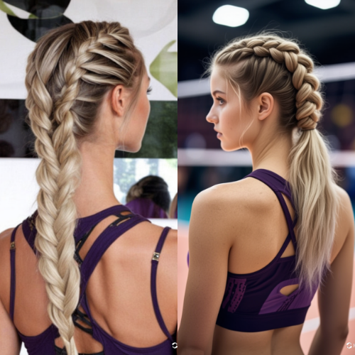
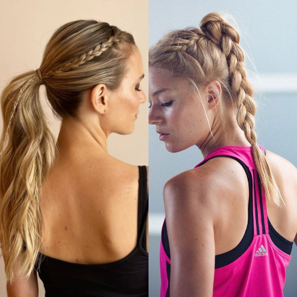
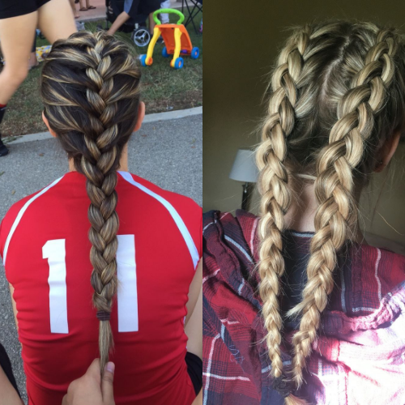
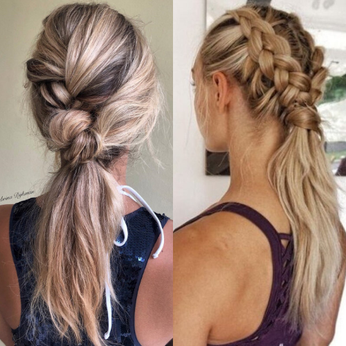

Volleyball is an intense and fast-paced sport that demands not only skill but also practical and stylish hair solutions. Whether you’re an athlete on the court or a volleyball enthusiast looking for inspiration, keeping your hair in place while looking great is a priority. Here’s an updated guide to the latest volleyball hair trends for 2025.
One of the most popular hairstyles among volleyball players is the high ponytail. In 2025, the trend has evolved with braided accents, adding both style and security. A small French or Dutch braid along the hairline keeps stray hairs in check while enhancing the overall look.
The bubble braid ponytail has gained traction due to its stylish appeal and functionality. Using elastic bands placed evenly along the ponytail, this look prevents tangling and gives a sporty yet chic vibe.
For players who prefer a more secure and no-fuss hairstyle, the low braided bun is a great choice. This style keeps hair completely out of the face while maintaining a sleek and elegant appearance.
Double Dutch braids are a classic volleyball hairstyle that remains a favorite in 2025. They provide a tight and long-lasting hold, making them perfect for intense matches. Players also love them because they prevent sweat from interfering with vision.
The claw clip trend has made its way into volleyball fashion. This easy and quick style allows players to keep their hair up without the hassle of tight elastics, reducing strain on the scalp while maintaining a trendy and effortless look.
For those who prefer to keep some hair down while ensuring it stays in place, the half-up, half-down braided style is a fantastic option. This style is especially great for casual volleyball games or practice sessions.
Functional accessories like headbands and sweatbands are making a strong comeback. Many brands now offer stylish and moisture-wicking options that keep sweat at bay while complementing a player’s overall aesthetic.
Use Sweat-Resistant Hair Products: Opt for lightweight gels or sprays that keep hair in place without causing buildup.
Avoid Heat Damage: Regular games and practice can put stress on hair. Minimize heat styling and use protective sprays if necessary.
Choose Soft Elastics: Prevent hair breakage by using scrunchies or soft hair ties instead of tight rubber bands.
Hydrate and Nourish: Keeping hair healthy with deep conditioning treatments helps prevent breakage from constant styling.
Whether you're gearing up for a competitive match or a casual game, these volleyball hair trends for 2025 will keep you looking stylish and performance-ready. Try out these hairstyles and find the perfect look that suits your game and personality!
   